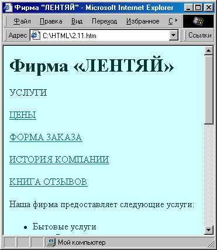
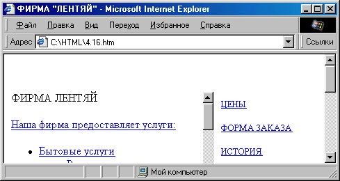
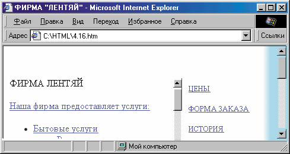

|
|
|
4.3. Обзор других возможностей стилевых таблиц
В примерах предыдущих двух разделов мы кратко продемонстрировали способы применения стилевых таблиц CSS и их удобство. Однако, помимо упорядочивания стилевой информации, таблицы стилей CSS открывают для создателя веб-страниц и многие новые возможности, которые недоступны в стандартном языке HTML. Правда, к сожалению, употребляя новые возможности CSS, нужно четко представлять себе, что не все броузеры смогут их проинтерпретировать правильно. На сегодняшний день существует два “абстрактных” стандарта CSS — так называемый стандарт CSS1 и более новый стандарт CSS2. Реальные броузеры по-разному поддерживают (или не поддерживают) их. Некоторые свойства стилей, описанные в CSS1 и, особенно, CSS2, до сих пор не получили поддержки в ряде броузеров, а некоторые не поддерживаются вообще. И, наоборот, существуют броузерные расширения, не описанные в стандартах CSS1/CSS2.
Однако не надо этого пугаться: все равно новые возможности использовать стоит, просто надо проверять результаты своей работы в разных бро-узерах и сравнивать их. Впрочем, это относится даже не столько к CSS, сколько к динамическим страницам, создаваемым с использованием JavaScript Итак, давайте познакомимся с некоторыми новыми возможностями CSS. Замечательно, что многие стилевые свойства здесь можно применять практически ко всем элементам. Например, цвет фона (свойство background-color), который мы в предыдущих примерах определяли для элемента <BODY> , может с таким же успехом задаваться и для отдельных текстовых блоков и даже слов. Более того, все элементы могут иметь свой фоновый рисунок (свойство background-image).
Практически для всех элементов можно теперь также определить поля (свойство margin), рамки различного вида и толщины (свойство border), и отступы (свойство padding). Различие между полем и отступом заключается в том, что отступ находится внутри рамки элемента, а поле — вне нее. Свойства полей, рамок и отступов могут задаваться индивидуально для каждой из сторон блока. Более гибко можно выбирать свойства шрифта: его начертание, размер, степень “жирности”, гарнитуру и оформление (это, соответственно, свойства: font-stlye, font-size, font-weight, font-family, text-decoration). Интересное свойство text-decoration позволяет, например, не только зачеркнуть или подчеркнуть текст, но и сделать его подчеркнутым (text-decoration: overline) или даже мигающим (text-decoration: blink). Правда, значение blink поддерживается пока только в Netscapel и Opera 4. Можно несколько “оживить заголовки с помощью свойства font-variant: small-caps. Правда, пока что это работает только в Netscape 6, a Internet Explorer просто преобра зует строчные буквы в прописные, а прописные не увеличивает.
Чтобы было интереснее, давайте рассмотрим некоторые свойства на кон кретном примере. Помните веб-страничку гипотетической фирмы “Лентяй” из главы 2? Сейчас мы попробуем взять ее за основу и улучшить оформление.
Размещение блоков текста
Вообще-то “Лентяй”, хоть и гипотетическая, но все же фирма, поэтому на ее сайте должны присутствовать несколько разделов, без которых корпоративный сайт уже не воспринимается, типа “О компании”, “Услуги” (или “Продукция”), “Цены”, “Новости” и прочие. Поэтому мы тоже снаб дим для начала эту страничку блоком соответствующих гиперссылок:
<DIV CLASS="lnk">УСЛУГИ</DIV> <DIV CLASS="lnk">
<A HREF="prices.html">ЦЕНЫ</A></DIV>
<DIV CLASS="lnk"><A HREF="forml .html">ФОРМА 3AKA3A</A></DIV>
<DIV CLASS="lnk"><A HREF="history.html">ИСТОРИЯ КОМПАНИИ</А> </DIV>
<DIV CLASS="lnk"><A HREF="guestbook.html">KHИГА OT3ЫBOB</A></DIV>
Как можно организовывать загрузку разделов.
Обратите внимание на то, что для списка ссылок мы определили класс Ink. Пока что определения свойств этого класса у нас нет, но ясно, что блок ссылок должен выглядеть как-то не так, как все остальное. Поскольку мы уже вроде бы находимся в разделе “Услуги” (см. содержание стра нички), гиперссылка на него отсутствует.
То, что у нас получилось, показано на рис. 4.5. Пока это выглядит не очень привлекательно. Прежде всего, давайте определимся с расположением блока ссылок на странице. Например, его можно было бы расположить

Рис. 4.5. Добавим на страничку блок гиперссылок
.hdr
{ position: absolute; left: 50px;
top: 10рх; } Мы немного отступили от края странички, хотя можно было указать,
конечно, и нулевые значения left и top. Заодно можно сразу указать свойство text-align: center;
для центрирования нашего заголовка. В тексте документа напишем:
<DIV CLASS="hdr">ФИРМА ЛЕНТЯЙ</DIV>
На всякий случай мы здесь используем неразрывный пробел вместо обычного, чтобы избежать переноса слова “Лентяй” на следующую строку. Затем определим класс Ift для левой части странички:
.ift { position: absolute; font-size: meduim; left: 10рх; top: 160px; width: 550px; height: 400px; overflow: auto; }
Здесь нужно немного пояснить. Во-первых, мы определили отступ от верх него края в 160 пикселов, чтобы оставить место для заголовка. Кроме того, свойство width определяет ширину этого блока так, чтобы оставить немного места справа для блока гиперссылок. Мы могли не определять свойство height, однако с его помощью можно “вогнать” всю информацию в преде лы экрана, а ту, что не поместится, доставать с помощью дополнительной полосы прокрутки, определив для этого свойство overflow: auto. Тогда назва ние фирмы будет всегда оставаться в верхней части экрана. Можно также было определить свойство overflow: scroll;, и тогда дополнительная полоса прокрутки (для левого блока) была бы видна в любом случае. Значение auto заставляет броузер показывать ее только тогда, когда это необходимо, то есть, когда есть информация, не помещающаяся в пределах блока.
В тексте документа, соответственно, заключим всю основную информацию в блок класса Ift:
<DIV CLASS="lft"> Наша фирма предоставляет следующие услуги: <UL>
<li>Бытовые услуги
И, наконец, определим класс rght для блока гиперссылок, который будет располагаться справа:
.rght { position: absolute; font-size: large; left: 565px;
top: 160px;
width: 160px; height: 400px; }
Поскольку гиперссылки должны быть хорошо заметны на фоне всего остального, мы сразу определяем для них более крупный шрифт (font-size: large;). Значение свойства top должно быть таким же, как и у класса Ift, чтобы оба блока расположились на одинаковой высоте. Значение left выбрано таким, чтобы слева осталось достаточно места для информационного блока. Теперь присвоим класс rght нашему блоку гиперссылок:
<DIV CLASS="rght">
<DIV CLASS="lnk">УСЛУГИ</DIV>
<DIV CLASS="lnk"><A HREF="prices.html">ЦЕНЫ</A></DIV>
<DIV CLASS="lnk"><A HREF="forml.html">ФОPMA 3AKA3A</A></DIV>
<DIV CLASS="lnk"><A HREF="history.html">ИСТОРИЯ КОМПАНИИ</А> </DIV>
<DIV CLASS="lnk"><A HREF="guestbook .html">KHИГА OT3ЫBOB</A></DIV>
</DIV>
Добавление фонового рисунка
То, что у нас получилось, показано на рис. 4.6. Прежде чем мы займемся стилевым оформлением каждого блока, давайте вместо однотонового фона установим градиент. Пусть основная информация находится на светлом фоне, а в районе блока гиперссылок логично было бы начать градиентный перелив в более темный оттенок. Только вот беда: если мы будем создавать фоновый рисунок с градиентным переливом справа, то совершенно непонятно, какой ширины он должен быть. Еще хорошо, что на этой страничке абсолютное позиционирование — можно, в принципе, начать градиент на 565-й точке слева. Однако все равно непонятно, где его заканчивать — ведь ширина экрана зависит от разрешения!
Давайте воспользуемся более изящным методом. Создадим градиент, имеющий слева тот же цвет, что и цвет фона, и расположим его справа. Для этого нам надо написать в свойствах элемента BODY:
background-position: right;
Однако посмотрите на результат (рис. 4.7). Фоновый рисунок действительно выровнен по правому краю, но он повторяется во все стороны, а нам это не нужно. Чтобы он повторялся только по вертикали, нужно добавить в свой ства BODY еще такую строку:
background-repeat: repeat-y; i

Рис. 4.6. Позиционирование блока гиперссылок
Вот теперь получилось то, что нужно. Кстати, можно заставить фоновый рисунок повторяться только по горизонтали (repeat-x) или вообще не повторяться (no-repeat). В этом случае можно указать любое значение свойства background-position в процентах, пикселах или иных единицах.
Оформление текста
Теперь давайте займемся информационным блоком. Чтобы информация хорошо читалась и воспринималась, он не должен особо страдать излишествами, однако, чтобы выделить заголовки списков, их можно написать более крупно и шрифтом другого начертания. Для этого определим соответствующий класс: .bigger { font-size: larger; font-family: sans-serif; }а в тексте документа применим его:
<DIV CLASS="bigger">Haшa фирма предоставляет следующие услуги:</DIV>
Как вы уже, наверное, поняли, свойство font-family определяет гарнитуру шрифта. Значение sans-serif соответствует шрифтам, не имеющим засечек. По умолчанию обычно определен шрифт serif (с засечками, обычно это Times New Roman).
Кроме того, воспользуемся уже знакомым нам стилевым свойством list- style-image для использования графических маркеров списка. Поскольку список у нас трехуровневый, то логично создать три маркера разных цветов. Как применить графические маркеры, вы уже знаете:
<UL STYLE="list-style-iiriage: url ("Images/markeri .gif ) ; ">
Можно было, конечно, создать специальные классы для каждого уровня списка, но мы этого делать пока не будем, потому что списков немного и, соответственно, вполне достаточно атрибута STYLE=.
Далее будем немного изменять вид гиперссылки при наведении на нее мыши. Здесь можно придумать различные варианты. В нашем примере мы решили изменять шрифт на полужирный и убирать подчеркивание при наведении мыши:
A:hover { font-weight: bold; text-decoration: none; } Все эти свойства вам уже знакомы. Давайте взглянем, что у нас получается (рис. 4.7).
Декоративное оформление текста
Для информационного блока оформление уже вполне закончено. Теперь займемся блоком гиперссылок. Вспомним, что мы для этого даже загото вили класс Ink. Чтобы наши разделы были хорошо заметны, давайте их обведем рамками:
.Ink { border-width: thick; border-style: ridge; border-color: #319CFF; color: red; text-align: center; } Чтобы рамка вообще отобразилась, необходимо определить свойство border-style (дело в том, что по умолчанию его значение — none, то есть рамки нет). Здесь мы можем выбрать вид рамки из возможных: solid (обычная), double (двойная), groove (вогнутая с обеих сторон), ridge (выпуклая с обеих сторон), inset (вогнутая), outset (выпуклая), dotted (точечная) и dashed (пунктир-

Рис. 4.7. Применение стилей к основной части странички
ная). Последние два значения, правда, пока воспроизводятся только в бро-узере Netscape 6. Мы выбрали значение ridge. Чтобы рамка не терялась на фоне больших букв, зададим свойство border-width: thick; (толстая рамка; еще можно указывать значения thin — тонкая и medium — средняя, а также задавать толщину в любых единицах). С помощью свойства border-color установим цвет рамки, по оттенку сочетающийся с фоном.
Поскольку в одном из обозначенных разделов мы всегда будем находиться, его название не будет являться гиперссылкой. Для него мы определили свойство color: red; (красный цвет текста). У гиперссылок, как вы помните, свой цвет.
Однако при этом придется сменить цвет гиперссылок на более светлый. Но будьте внимательны! Цвет гиперссылок нужно сменить только для класса Ink, потому что в других местах гиперссылки расположены на свет лом фоне, и их уже нельзя осветлять, иначе их не будет видно. Поэтому не (нужно переопределять свойства элемента <А> целиком. Нужно переопре делить некоторые его свойства только внутри класса Ink:
.Ink A{ text-decoration: none; color: white;
Такая запись делает как раз то, что нам нужно: в классе Ink для элемента <А> определяются некоторые новые свойства, а остальные остаются такими же, как и у всех элементов <А>. Заодно мы использовали свойство text- decoration: none;, чтобы снять подчеркивание с гиперссылок в этом блоке — в таком “кнопочном” оформлении оно неуместно.
Теперь все вроде бы нормально, однако одна из кнопок “вылезает” за пределы отведенного пространства (из-за слова “компании”). Можно, конечно, это пространство увеличить, но давайте лучше попытаемся немного “ужать” это слово. Есть такое стилевое свойство letter-spacing, которое задает дополнительное расстояние между буквами. Если это расстояние задать отрицательным, буквы расположатся теснее обычного:
<DIV CLASS="lnk"><A НRЕF="histогу.html">ИСТОРИЯ <SPAN STYLE="letter-spacing: -3рх;">KOMПAHИИ</SPAN></A></DIV>
Оформление заголовка
Теперь можно заняться заголовком. Во-первых, нужно задать его ширину и высоту, причем первую мы зададим в процентах, чтобы она могла изменяться вместе с шириной окна броузера:
width: 90%; height: 100рх;
Эти значения мы определяем для класса hdr. Значение height выбираем с таким расчетом, чтобы осталось еще немного пространства сверху от остальных блоков нашей веб-странички. Далее для заголовка лучше назначить шрифт покрупнее:
font-size: 6Орх;
Кроме того, будет лучше, если шрифт заголовка будет контрастен относительно всех остальных шрифтов. Выберем какую-нибудь необычную гарнитуру:
font-family: OdessaScriptFWF;
Однако, указывая в явном виде название гарнитуры шрифта, следует предусмотреть случай, когда на компьютере пользователя этого шрифта не окажется. Для этого можно определить (через запятую) еще несколько вариантов начертания шрифта в порядке убывания предпочтительности. Последним обязательно укажите начертание из стандартного набора (serif, sans-serif, cursive, fantasy, monospace). В данном случае нам нужен необычный шрифт, поэтому укажем значение fantasy:
font-family: OdessaScriptFWF, fantasy;
Теперь расставим буквы немного пошире с помощью уже знакомого нам свойства letter-spacing, а также определим высоту строки, равной высоте нашего блока:
letter-spacing: 0.05em; line-height: 100рх;
font-weight: 900;
Как видите, мы определили здесь максимально возможную жирность шрифта. Теперь определим цвет текста, сочетающийся с цветом фона:
color: #3163CE;
Далее, мы хотели нарисовать рамку вокруг заголовка. Определим ее свойства, используя сокращенную запись:
border: 10рх outset #003163;
В этой записи определены сразу три свойства: border-width, border-style и border-color. В некоторых случаях допустимо подобное объединение значений нескольких свойств в одну строку. Это можно написать быстрее, хотя и менее наглядно.
В принципе заголовок готов. Давайте только добавим к нему еще визуальный эффект с помощью свойства filter. Это работает, правда, только в броузере Internet Explorer и отсутствует в спецификациях CSS, однако смотрится очень красиво. Можно применить это свойство, например, так:
filter: shadow;
В результате наш блок будет отбрасывать тень. Существуют такие значения свойства filter, как dropshadow (другой тип тени), blur (размытие), wave (отражение в волне) и прочие.
Наложение элементов веб-страницы
Для полного завершения картины неплохо бы еще добавить какой-либо фоновый рисунок типа “водяного знака”, символизирующий профиль деятельности фирмы. Поскольку фирма называется “Лентяй”, возьмем за основу фотографию компании, занятой бездельем. Чтобы она стала похожа на “ водяной знак ”, вначале обработаем ее в графическом редакторе, например в Adobe Photoshop.
Исходное изображение сначала несколько размоем. В Adobe Photoshop это делается фильтром фильтр> Размытие > Сильное размытие (Filter > Blur > Blur More). Для усиления эффекта применим этот фильтр несколько раз подряд. Затем дайте команду Изображение > Настройка > Оттенок и насыщенность (Image > Adjust > Hue>Saturation). Здесь можно придать изображению оттенок, сходный с цветом фона. Затем необходимо уменьшить контрастность изображения, чтобы оно не отвлекало на себя слишком много внимания, и увеличить его яркость, поскольку у нас светлый фон: Изображение > Настройка > Яркость/Контраст (Image > Adjust > Brightness/Contrast). После этого обрежем изображение по контуру основного рисунка и сохраним в формате GIF с прозрачным фоном.
— Стоп! — скажете вы, — а что же делать дальше? Ведь у нас уже есть на веб-странице один фоновый рисунок — градиент! Ведь сразу два фоновых рисунка назначить нельзя!?
Ну, во первых, нельзя назначить два фоновых рисунка одному элементу, так что мы можем спокойно назначить его, например, левому (информационному) блоку. Однако хотелось бы подложить этот рисунок не только под информационный блок, а сделать его как бы нейтральным фоновым рисунком всей страницы. Поэтому просто-напросто давайте опять воспользуемся абсолютным позиционированием. Определим класс logo, располагающийся в центре нашей страницы, ближе к низу:
.logo { position: absolute; left: 150; top: 220; } Теперь присвоим этот класс нашему рисунку:
<IMG CLASS="logo" SRC="Images/logo6.gif" WIDTH="500" HEIGHT="346" BORDER="0">
Действительно, при абсолютном (да и относительном) позиционировании блоки могут накладываться друг на друга, и тогда возникает проблема “третьего измерения” — какой из них окажется “выше”? Для решения этой проблемы придумали стилевое свойство z-index. Чем больше его значение, тем “выше” располагается блок при наложении.
Чтобы наш “водяной знак” не загораживал все остальное, определим для класса logo отрицательное значение z-index:
z-index: -5;
<!DOCTYPE HTML PUBLIC "-//W3C//DTD HTML 4.0 Transitionai//EN"> <HTML>
<HEAD>
<TITLE>ФИРМА "ЛЕНТЯЙ"</ТIТLЕ>
<STYLE> BODY {
background-color: #D2FFFF;
color: #003737; background-image: url("Images\grad2.jpg"); background-position: right; background-repeat: repeat-y;
} A:link,A:active,A:visited { color: #006A6A;
} A:hover { font-weight: bold; text-decoration: none;
}.hdr { position: absolute; left: 50px; top: 10рх; text-align: center; font-family: OdessaScriptFWF, fantasy, font-size: 60px; font-weight: 900; width: 90%; height: 100px; letter-spacing: 0.05em; line-height: 100px; filter: shadow; border: 10рх outset #003163; color: #3163CE;
} .rght { position: absolute; font-size: large; left: 565px; top: 160px; width: 160px; height: 400px; overflow-x: visible; }
.Ink { border-width: thick; border-style: ridge; margin: 10рх; padding: 5px; border-color: #319CFF; background-image: uri("Images/backlnki.jpg") ; color: red; text-align:center;
} .Ink A { text-decoration: none; color: white; } .1ft { position: absolute; font-size: meduim; left: 10рх; top: 160px; width: 550px; height: 400px; overflow: auto; } .bigger { font-size: larger; font-family: sans-serif; } .logo { position: absolute; left: 150; top: 220; z-index: -5; }
</STYLE>
</HEAD>
<BODY>
<DIV CLASS="hdr">ФИРМА &1аquо;ЛЕНТЯЙ&raquо;</DIV>
<DIV CLASS="rght"> <DIV CLASS="lnk">УСЛУГИ</DIV>
<DIV CLASS="lnk"><A HREF="prices.html">ЦЕНЫ</A></DIV>
<DIV CLASS="lnk"><A HREF="forml.html">ФОРMA 3AKA3A</AX/DIV>
<DIV CLASS="lnk"><A HREF”"history.html">ИСТОРИЯ <SPAN STYLE="letter-spacing: -3px; ">КОМПАНИЯ</SPAN>
</A>
</DIV>
<DIV CLASS="lnk"><A HREF="guestbook.html">КНИГА ОТЗЫВОВ</А> </DIV>
</DIV> <DIV CLASS="lft"> <DIV CLASS="bigger">Haшa фирма предоставляет услуги:</DIV>
<UL STYLE=list-style-image: url('Images\markerl.gif);">
<LI>Бытовые услуги <UL STYLE="list-style-image: url('Images\rriarker2.gif');">
<LI>Вкручивание электрических лампочек <LI>Услуги по наведению чистоты <UL STYLE="list-style-image: url('Images\marker3.gif');"> <LI>Подметание пола <LI>Вынесение мусора из квартиры <LI>Мытье посуды </UL>
</UL> <LI>Приготовление пищи <LI Компьютерные услуги <UL STYLE="list-style-image: url('Images\marker2.gif');"> <LI>Дефрагментация жестких дисков
<LI>Переустановка Windows </UL> </UL>
<DIV CLASS="bigger">Чтобы воспользоваться услугами, следует: </DIV>
<OL> <LI> Зарегистрироваться (<А НRЕF="reg.htm1">здесь</А>)
<LI>Заполнить форму заказа (<А HREF="forml.htm1">здесь</А>)
<LI>Подтвердить заказ:
<OL TYPE="I">
<LI>Получив письмо с паролем, послать пустой ответ
<LI>Заполнить форму-подтверждение заказа
(<А НRЕF="form2.htm1">здесь</А>)
</OL> <LI>Приготовить деньги для оплаты услуг </OL> </DIV>
<IMG CLASS="logo" SRC="Images/logo6.gif" WIDTH="500" HEIGHT="346" BORDER="0">
</BODY>
</HTML>
В следующих главах мы еще вернемся к этой страничке и продемонстрируем некоторые методы динамического взаимодействия с пользователем. А сейчас давайте отложим ее на время.
В этой главе мы рассмотрели, разумеется, не все возможности CSS. Однако мы продемонстрировали применение большинства стилевых свойств.
|
|
|